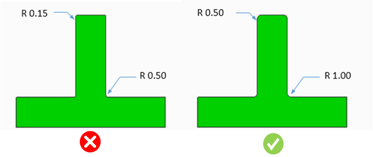

最小および最大のフィレット半径は、ユーザーが指定した値に従う必要があります。
設計者は、鋭角なコーナーや断面形状の急激な変化を避けなければなりません。また、内側コーナーは可能な限りフィレットを設け、外側コーナーはできるだけ丸み（半径）を付けて設計する必要があります。内側の鋭角コーナーを減らすことで、部品に追加の強度が与えられ、充填性も向上します。
多くの場合、外側の鋭いエッジは人の安全に関わる問題と関連しています。
製造プロセスに応じて、部品の内側コーナーおよび外側コーナーには異なる最小および最大のフィレット半径を設定する必要があります。
一般的なガイドラインでは、内側コーナーの最小フィレット半径は 1.0 mm 以上、最大フィレット半径は 12 mm 以下であることが推奨されています。
同様に、外側コーナーの最小フィレット半径は 0.25 mm 以上、最大フィレット半径は 12 mm 以下であることが推奨されています。
規格に基づいて、ユーザーはフィレット半径を設定できます。現在のデフォルト設定の半径は 1.0 mm です。
ユーザーは、［鋭角エッジを検出］チェックボックスを選択することで、パーツ上の鋭角エッジを確認することもできます。
ユーザーは、凸形状の場合に鋭角エッジを検出するための有効な角度値を設定できます。設定された値に基づいて、DFMPro は鋭角なコーナーを検出します。
注記：
凸形状のフィレットの場合、本ルールでは解析のために 60～120 度の範囲の半径が使用されます。

注記：
本ルールは、ミル加工、プラスチック、鋳造、ダイカスト部品に特に適しており、設計者は標準的なフィレット半径を使用し、鋭角なエッジを避けるべきです。

ここで、
R = 半径
注記：
本ルールは、アセンブリレベルの解析にも対応しています。
本ルールは、DFMPro 設定に基づき、トップレベルのアセンブリパーツに対して実行できます。